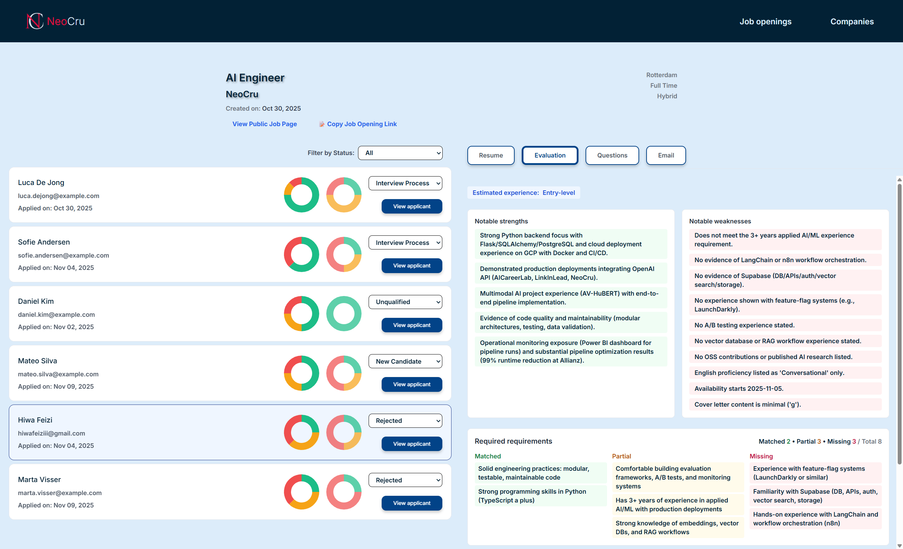

Spotify stopped giving new apps audio features and previews, so I built a small local app that finds the audio itself, scores every song with Essentia's mood models, clusters the scores into 24 moods, and pushes them back as playlists. 3,197 songs analysed, 2,741 in a playlist, and an interactive map of all of them, with playback.
A validation system can tick every automated box and still end up the most expensive part of the project. The real setup I reviewed needed four tables per validated table, five steps to run a validation, and reported failures as row dumps with no diagnosis. The system I built instead, now in daily use: two shared tables for the whole system, a macro that validates everything at run end, five sample rows per side showing the exact mismatch, an LLM-drafted key book for the column mapping, and a ready-to-run query logged with every failure.
A model that builds green every morning looks alive, and it can still be dead. 400 of our models were updating on schedule, loading fresh data daily, and feeding nothing anyone needed. The method that finds them: enumerate the endpoints that legitimately matter, walk the dependency graph upstream, and everything outside that closure must argue for its life, with parents, children, and downstream trees attached so review is context, not archaeology.
Most of the dead weight was not in the code at all: it was warehouse objects the codebase never mentions. Diff the catalog against the code graph, then grep the entire repo for every candidate's name before dropping anything. Zero references anywhere: ~5,000 tables retired. One or more mentions: 2,000 queued for review. Nothing dropped outright: renamed first, deleted months later. The dbt + Snowflake specifics are at the end.
dbt's built-in freshness check stops at the source, and extending it model by model doesn't survive a 10,000-model project. I designed the check I actually needed: post-run, per deliverable, walking the full upstream DAG (1,744 nodes at the deepest) with SLAs from folder paths, staleness judged on loaded file dates instead of run times, mid-chain detection, and exactly one monitoring query.
I trained a Mad Pod Racing bot end to end: GPU-parallel PPO self-play, DAgger imitation of a blocker I could not beat, then leagues that evolved past the teacher. The real output was a recipe. A detailed low-noise reward designed before training, a small league of 15 with a drop system, and evaluation kept separate from training. With those from day one, three weeks becomes three days. The shipped bot ranked 459th of 233,508 worldwide, top 0.2%, in Python, with every fight an interactive replay of a real recorded match.
How I turned an 8-hour source-onboarding task into a Copilot prompt that anyone on the team can run, with the dbt parse trick and Snowflake validation baked in. The speed wasn't the point: the knowledge moving out of a few people's heads and into the prompt was.
A Python pipeline that generates niche-specific memes with Grok, validates each batch with a second LLM pass, renders 20 PIL templates, and posts on a schedule via GCP Cloud Functions and Cloud Tasks. Two execution modes (eager pre-render and lazy render-on-demand) share one codebase. Ran it on 3 LinkedIn pages until LinkedIn capped me from creating more.
At enterprise scale, data documentation lives across PDFs, Word, Excel, and PowerPoint in multiple languages with embedded images and charts. I built a pipeline that consolidates 80 such files into structured documentation cross-referenced against the live Snowflake schema, with AI assumptions kept separate from verified facts and every claim traceable to its source.
Thousands of SAS scripts. A clunky viewer. Weeks of permission tickets. Then a tiny recursive Python script that walked the tree once and put every file in front of every developer in VS Code.
Four AI agents dropped into Minecraft with no instructions, no labels, and no pre-built knowledge. They learned to eat, developed personalities, and formed social dynamics. Stage 1 of a brainstem-up survival experiment, complete, with a clear lesson about the platform limits any further stages would need to push past.

I built an AI recruitment tool that evaluated every application against the actual requirements and explained every ranking. Its one real-world result: an intern hire at Allianz that I sourced through it and introduced, because the company itself couldn't use the platform for GDPR reasons. Zero users, so I closed the company properly, KVK deregistration included. What it was, how it was built, and what I learned.
I wrote a Python script that generates a full pyramid complex inside Minecraft: central pyramid, walls, moat, entrance corridor, and interior halls. The whole thing took a few hours. The Egyptians needed 20 years.
I built a dbt macro that automatically validates every migrated model against its original counterpart after every run, broken down by source, catching exact row-level discrepancies in seconds instead of hours.
We had hundreds of tables on both SAS and Snowflake with different column names, different content, and extra columns on both sides. I built a pipeline that reduced per-table matching from days to minutes.